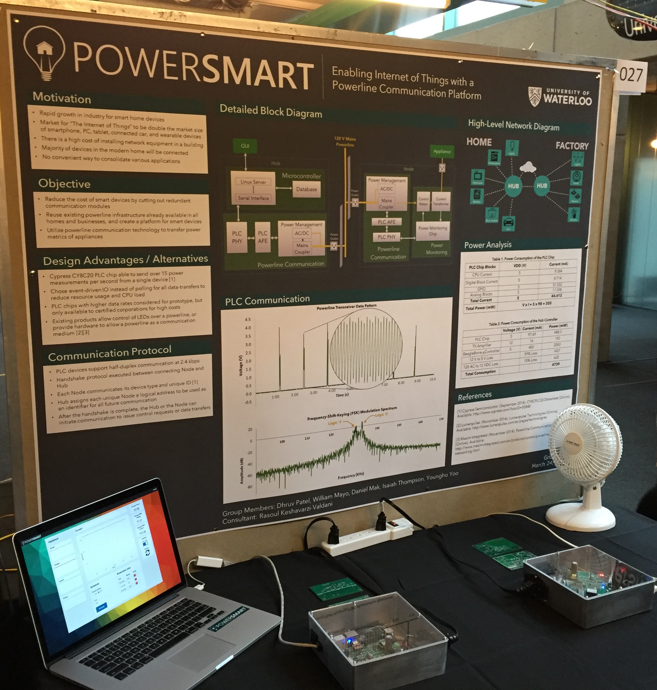

Project under development (expected finish date: 24 March, 2015)
Team Members: Daniel Mak, Dhruv Patel, Isaian Thompson, William Mayo, Youngho Yoo
Project Summary: Many current communication schemes use WiFi integrated systems for power management and control. However, WiFi may not be available in every part of the system, and is not reliable at every point of the smart home. Another option is to use Powerline communication as a resource for home automation. Powerline infrastructure is a resource available in every household but is not used for internal communication. The goal of this project is to design a platform for communication and management, of any system that uses power inside a home, using the existing powerlines. Smart Home Powerline Communication Platform connects all appliances through the existing powerline infrastructure to a centralized hub. This solution consist of a module with integrated powerline protocol chips, microcontroller, and a centralized hub with embedded linux server as shown in image below.
Yes, it had been a long time since I last did some web developement back in highschool and at my first internship. But finally, I got my self my personal webpage at https://ece.uwaterlo.ca/~dr3patel.
It was around the end of the first year of univeristy when I got my first arduino board, couple of 8X8 Led matrix, free samples of shif registers from Texas Instrument and built the 8X16 LED Matrix Disp.
Note: This is not a final project picutre as I couldn't find the better picture I had in my old laptop.
I designed a simple clock with arduino and 7-seg displays.
Functionality wise, the clock was functioning correctly. However, after three days of continuously running this clock, I found that this clock was lagging by 6 seconds. I later found out that it was due to arduino processing overhead which utilizes certain clock cycles that are discounted in the actual timing. I then investigated that simply using FPGA counters with external oscillator was better way to realize clock with much improved precision (it will still have clock jitter and skew). After all, you need atomic level precison to get a perfect precision clocking device!
This was a key moment that got me started to think about oscillators, crystals, logic delay and clock distribution on chip in freshmen years.
Used DC motors, PIC microcontroller and Infrared Sensor to detect black and white surface to make this little robot.
Team Member: Dhruv Patel, Sahibdeep Singh Sodhi
We took this robot to the Peel Region High-school robotic competition and received 5th Rank.
Tared apart my old tape-recorder and took out the seven segment display to make my Text-scrolling display with PIC microcontroller chip.